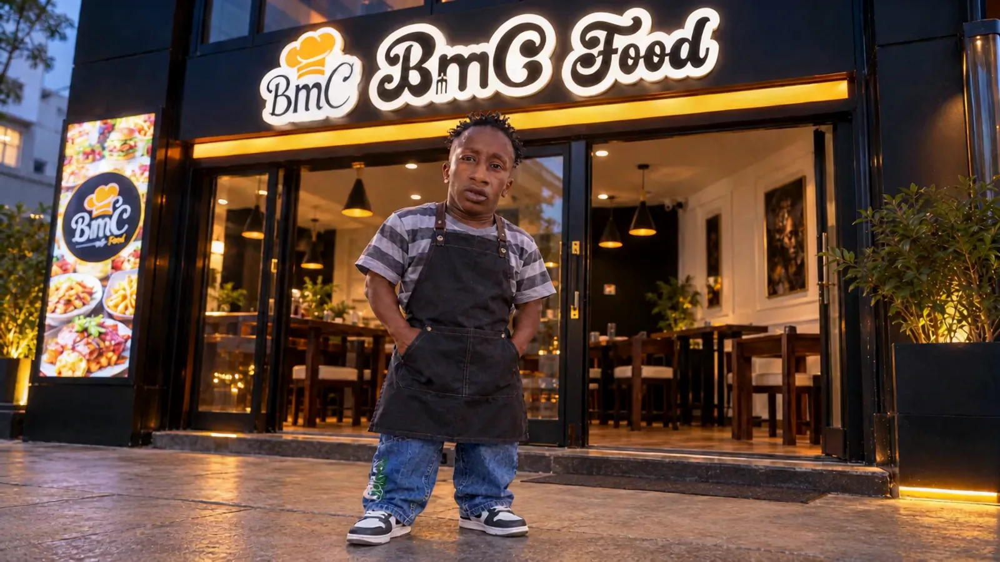

01Cité Mixta, Point E
Le tacos, version Dakar.
Pressé à la plancha, gratiné à la minute.
Maquette de conception du site : logo officiel conservé tel quel, palette tirée du menu (noir et ambre), typographie de titres condensée et accents en italique éditorial.
Repris du menu, non redessiné. Toujours posé sur une tuile blanche arrondie. À remplacer par le fichier HD (PNG ou SVG) du client.
Pressé. Grillé. Gratiné.
Instrument Serif italique, pour l'accent
Archivo (axe largeur 62–125, graisse 300–900) pour les titres condensés et le texte courant. Titres en capitales, interlignage serré (0,88) ; texte courant 16–19 px, interlignage 1,55.
Survol : le fond encre monte depuis le bas, la flèche glisse de 5 px. Liens : soulignement qui se trace de gauche à droite.
Pour les grandes faims ou à partager.

01Cité Mixta, Point E
Pressé à la plancha, gratiné à la minute.